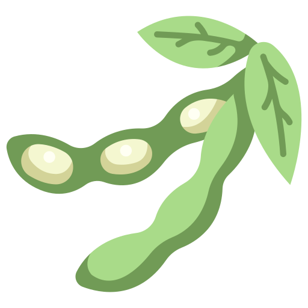
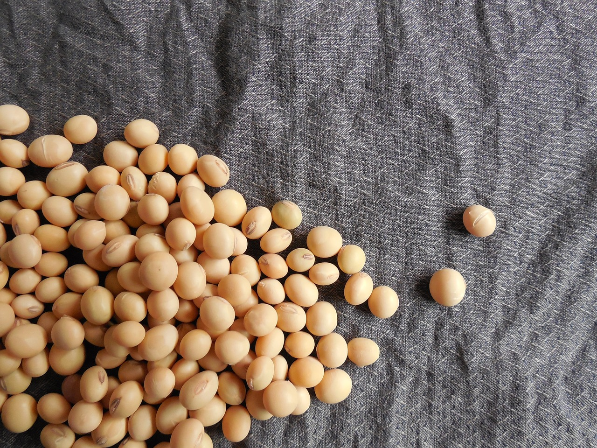

Sobre o Agrinho

A soja é uma das culturas mais importantes do mundo, tanto em termos de produção quanto de uso.
Originária da Ásia, essa planta leguminosa tornou-se uma peça-chave na agricultura global devido à sua versatilidade e valor nutricional.
A soja é cultivada principalmente por suas sementes, que são ricas em proteínas, óleos e outros nutrientes essenciais, tornando-a uma fonte vital de alimento para humanos e animais em todo o mundo.
Além disso, a soja também desempenha um papel fundamental na agricultura sustentável, pois pode fixar o nitrogênio no solo, reduzindo a necessidade de fertilizantes nitrogenados.
Desafios

No entanto, o cultivo em larga escala da soja também trouxe preocupações significativas em relação ao meio ambiente e à sustentabilidade.
A expansão das plantações de soja muitas vezes está associada ao desmatamento, especialmente em regiões como a Amazônia brasileira, onde vastas áreas de floresta foram convertidas em terras agrícolas.
Esse desmatamento tem consequências devastadoras para a biodiversidade e os ecossistemas locais, além de contribuir para as mudanças climáticas devido à liberação de grandes quantidades de carbono armazenado nas florestas
No entanto, o cultivo em larga escala da soja também trouxe preocupações significativas em relação ao meio ambiente e à sustentabilidade.
A expansão das plantações de soja muitas vezes está associada ao desmatamento, especialmente em regiões como a Amazônia brasileira, onde vastas áreas de floresta foram convertidas em terras agrícolas.
Esse desmatamento tem consequências devastadoras para a biodiversidade e os ecossistemas locais, além de contribuir para as mudanças climáticas devido à liberação de grandes quantidades de carbono armazenado nas florestas.
Contribuição

Diante desses desafios, tem havido um crescente apelo por práticas agrícolas mais sustentáveis e pela adoção de certificações que garantam uma produção de soja responsável.
Iniciativas como a certificação da RTRS (Round Table on Responsible Soy) buscam promover padrões ambientais
e sociais mais rigorosos na produção de soja, incentivando os agricultores a adotarem técnicas de cultivo que minimizem os impactos negativos sobre o meio ambiente e as comunidades locais.
Diante desses desafios, tem havido um crescente apelo por práticas agrícolas mais sustentáveis e pela adoção de certificações que garantam uma produção de soja responsável.
Iniciativas como a certificação da RTRS (Round Table on Responsible Soy) buscam promover padrões ambientais
e sociais mais rigorosos na produção de soja, incentivando os agricultores a adotarem técnicas de cultivo que minimizem os impactos negativos sobre o meio ambiente e as comunidades locais.
Relogio do soja
Tempo restante para plantação de soja
7
dias
7
horas
7
min
7
seg